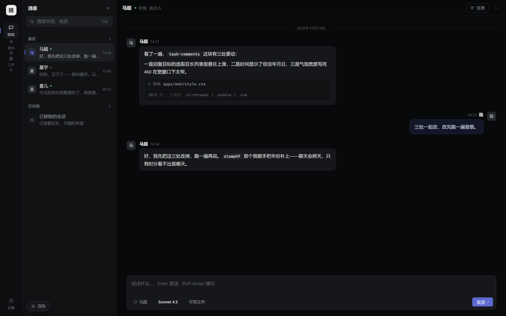
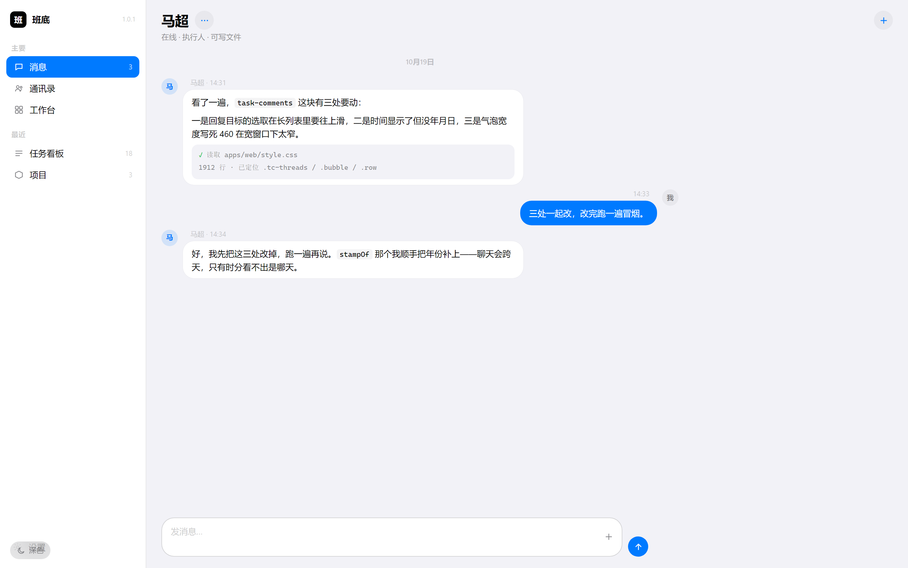
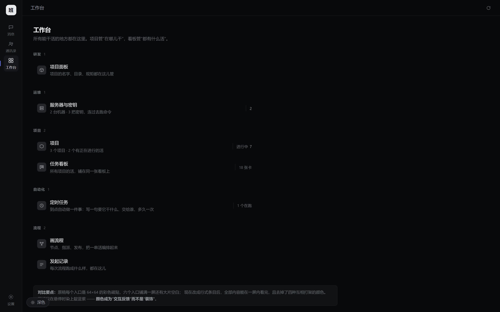
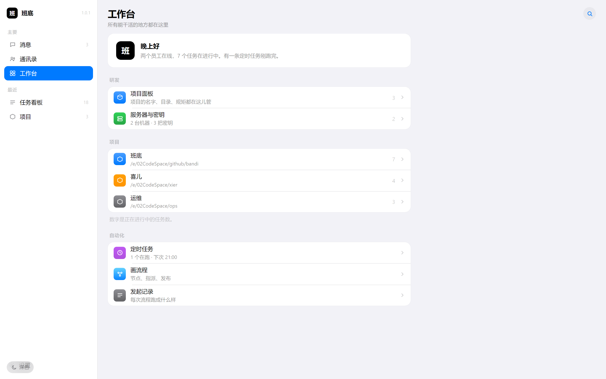

左边是同一套界面的两种语言。密排风格把界面压到几乎不存在，靠灰阶和细线； iOS 给它圆角、彩色图标和大标题，让界面"有温度"。同一份信息，两种气质。




不是"换皮"，是每一样都要重新决定。
| 组件 | 密排风格 | iOS 风 |
|---|---|---|
| 导航选中态 | 左侧 2px 竖条 + 极淡底 | 整行蓝色胶囊（系统蓝实心） |
| 入口图标 | 单色线框，悬停才染色 | 彩色圆角方块，永远着色 |
| 分组 | 1px 通栏细线切分 | 白色圆角卡片，行间内嵌细线 |
| 我的气泡 | 极浅紫底 + 淡紫边（怕实心太吵） | 系统蓝实心 + 白字（就是要跳出来） |
| 气泡圆角 | 10px，无尾巴 | 18px，更接近 iMessage |
| 主按钮 | 矩形，写"发送"二字 | 圆形，只有一个 ↑ 图标 |
| 页面标题 | 13px，行内小字 | 22px 大标题（iOS large title） |
| 行高 | 32px（鼠标精度，能密就密） | 44px（手指精度，留够余量） |
| 阴影 | 几乎没有 | 卡片有极淡的 0.5px 描边式阴影 |
| 材质模糊 | 不用 | 只用在浮层（backdrop-filter） |
直接搬手机会立刻不对劲，这三条是我做的时候实际调过的。
Apple HIG 规定触控目标最小 44pt，那是给手指的。鼠标精度高得多， 桌面端同行高会让「12 行」变成「18 行」，一屏装不下。 收，但不能收到 32 以下 —— 再小就失去 iOS 的"从容感"了。
iOS 的 backdrop-filter 是为了让浮层"透出底下的内容"。
侧栏是常驻的，背后什么都没有，加毛玻璃只是白白吃 GPU。
侧栏用纯白整块，只有弹出的菜单才模糊。
手机上输入条天生只有一屏宽。搬到 1440 的桌面上如果还拉满， 立刻变成"网页表单"。封顶 820px、跟对话内容左对齐， 它才还是 iOS 的输入条。
这点跟几乎所有人想的不一样：iOS 深色的分组底是 #000000，
卡片是 #1c1c1e。密排风格则是深灰底 #08090a + 稍亮卡片。
iOS 的层次是"黑上浮起一块灰"，看起来更沉。
这不是审美题，是产品定位题。
| 选密排风 | 选 iOS 风 | |
|---|---|---|
| 它说班底是 | 一件精密工具（像 IDE、像终端） | 一个身边的助手（像备忘录、像微信） |
| 一屏能放多少 | 多 —— 适合看板、日志、任务流 | 少 —— 适合对话、做决定 |
| 上手门槛 | 偏高，像"开发者工具" | 低，中国用户对 iOS 语法是熟的 |
| 专业感 | 强 | 弱一些，但亲和 |
| 和微信像不像 | 不像 | 有些像（蓝色气泡、圆形按钮） |
| 最适合的页面 | 任务看板、运行日志、设置 | 消息、通讯录、工作台 |
班底 v1.0.1 · 深色 / 浅色对照 · 1440×900 渲染